프로그램 개요
Naeil ERP Fare Updater는 내일투어 ERP 시스템(erp.naeiltour.co.kr)의 행사요금일괄수정 화면에서 항공요금을 엑셀 연동 및 셀 직접 편집 방식으로 자동 입력·저장하고, 별도 TOPAS 요금조회 탭에서 출발편·귀국편 원문을 수집해 박수별 왕복요금까지 계산하는 RPA 업무 자동화 프로그램입니다.
날짜마다 조회하고 클릭해서 요금을 하나하나 입력하던 과정, TOPAS 다음날 조회 반복, 운임/시즌 기준 요금 계산, ERP 입력표 전달까지 이어지는 반복 작업을 줄여 줍니다.
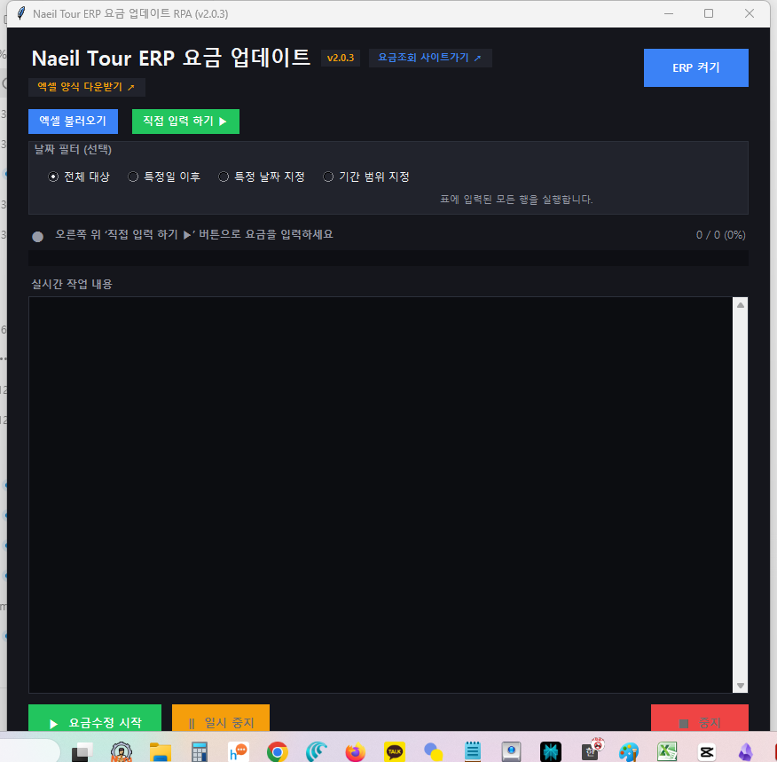
그림 1. 프로그램 기본 실행 화면 (기본 모드)브라우저 켜기 & 로그인
프로그램이 직접 로그인하지 않고, 사용자가 직접 로그인한 크롬 창을 그대로 이어받아 작동합니다. 그래서 계정 정보가 프로그램에 저장되지 않아 안전합니다.
-
1프로그램 우상단 메인 헤더에 위치한
브라우저 켜기버튼을 클릭합니다. 선택된 탭에 따라 요금수정 탭에서는 ERP 로그인 화면, 토파스 요금조회 탭에서는 TOPAS 로그인 화면이 열립니다. -
2새 크롬 창이 자동으로 열리면서 내일투어 ERP 로그인 화면이 나타납니다.
-
3새로 뜬 크롬 창에서 사원 아이디로 직접 로그인을 완료한 뒤, 해외상품 → 행사요금일괄수정 화면까지 이동합니다.
요금 준비 & 스프레드 편집
업데이트하려는 날짜와 항목별 요금 정보는 엑셀 파일을 가져오거나, 프로그램 내에 내장된 스프레드시트(셀) 그리드 편집기를 이용해 직접 작성할 수 있습니다.
엑셀 양식 다운받기 ↗ 버튼을 누르면 양식 선택창이 떠서 단일 날짜 양식(8열: 날짜, 항공비, 호텔비, 지상비, 여행경비, 알선수익, 소아요금, 유아요금)과 기간 입력 양식(시작일·종료일이 나뉜 9열) 중 하나를 고를 수 있습니다. 받은 양식에 요금을 채운 뒤 요금불러오기 버튼으로 데이터를 표에 얹으면 되고, 파일이 단일인지 기간인지는 자동으로 인식해 표를 맞춰 줍니다.
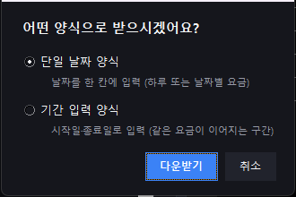
그림 2.엑셀 양식 다운받기 ↗ 클릭 시 뜨는 양식 선택창 — 단일/기간을 고르고 다운받기를 누릅니다.
0으로 채워집니다.
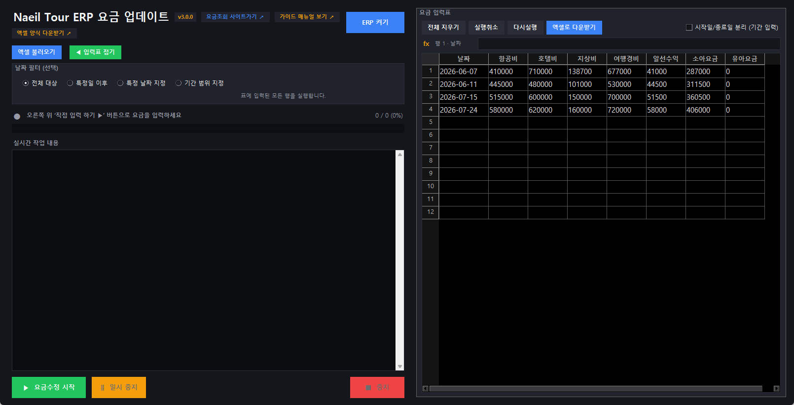
그림 3. 단일 날짜 입력 — 우측 입력표가 8열(날짜 + 요금 7종)로 표시됩니다.시작일/종료일 분리 (기간 입력) 체크박스를 켜면 표가 9열로 바뀌어 시작일과 종료일을 따로 적을 수 있고, RPA가 그 구간을 한 번에 조회해 일괄 수정합니다. 체크를 풀면 다시 단일 날짜(8열) 표로 돌아갑니다.
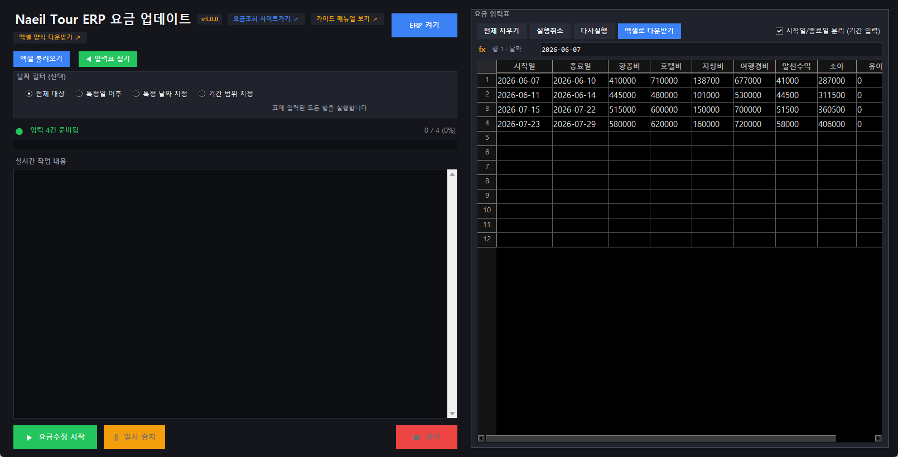
그림 4. 기간 입력 —시작일/종료일 분리 (기간 입력) 체크박스를 켜면 표가 9열(시작일·종료일 분리)로 바뀝니다.
=A2+10000) 해당 셀 우하단을 더블클릭하면 엑셀처럼 아래 행에 일괄 채워집니다.2. 실행취소(Ctrl+Z) / 다시실행(Ctrl+Y): 작업을 잘못 기입했거나 수식을 채웠을 때 툴바나 단축키로 온전하게 복구할 수 있습니다.
| 버튼명 | 설명 | 주요 기능 및 동작 |
|---|---|---|
| 전체 지우기 | 표 데이터 청소 | 스프레드시트 내에 기입된 날짜 및 요금 전체 데이터를 초기화합니다. |
| 실행취소 / 다시실행 | 작업 히스토리 복구 | 수식 입력 또는 데이터 셀 기입 오류 시 전후 단계로 온전히 롤백합니다. |
| 요금구간 병합 | 연속 날짜 정리 | 같은 요금이 이어지는 날짜를 시작일·종료일 구간으로 합칩니다. 중간에 비는 날짜가 있으면 별도 구간으로 분리합니다. |
| 항공사코드 | ERP 조회 조건 | ERP 화면의 항공사코드 목록을 읽어 오며, 선택한 코드를 요금수정 조회 조건에 함께 전달합니다. |
| 엑셀로 다운받기 | 자체 내역 내보내기 | 현재 그리드에 연산 완료되어 표시되고 있는 요금 전건을 엑셀 파일(.xlsx)로 내보냅니다. |
RPA 실행 & 필터링
요금 준비와 ERP 로그인까지 확인되었다면 필터를 이용해 작업 대상 날짜를 타겟한 후 RPA 구동을 진행합니다.
-
1날짜 필터 모드 선택:
- 전체 대상: 그리드에 기입된 데이터 전량을 순차적으로 업데이트합니다.
- 특정일 이후: 시작 날짜를 지정하여 해당 일자 포함 이후의 날짜만 골라 실행합니다.
- 특정 날짜 지정: 대입하기 원하는 개별 날짜들을 콤마(,)로 구분하여 기입해 처리합니다.
- 기간 범위 지정: 시작일과 종료일을 정해 그 사이에 걸치는 행만 골라 실행합니다.
※ 기간 입력 모드에서는 각 행의 시작일~종료일 구간이 필터 범위와 겹치기만 해도 대상에 포함됩니다. -
2요금수정 시작 버튼 클릭:
클릭하면 "ERP에 연결하고 있어요..." 로딩 화면이 잠깐 표시되면서 작업을 준비합니다. -
3실시간 작업 진행 및 중단 제어:
- 진행 상황은 하단 실시간 작업 내용을 통해 처리 성공 및 경고 오류 메시지로 즉시 확인 가능합니다.
- 진행 도중 필요하면 일시 중지 / 다시 시작 또는 중지 버튼으로 작업을 멈출 수 있습니다.
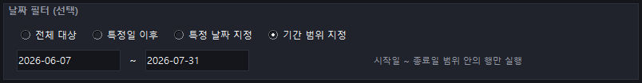
그림 5. 기간 범위 지정을 고르면 시작일·종료일 입력칸이 나타납니다.TOPAS 요금조회
토파스 요금조회 탭은 TOPAS SellConnect Entry 화면에서 출발편과 귀국편 원문을 각각 수집한 뒤, 운임/시즌 데이터와 항공노선·박수를 기준으로 출발일별 왕복요금을 계산합니다. 계산 결과는 복사, 엑셀 다운로드, 계산 과정 확인, ERP 요금 입력표 전달까지 이어집니다.
AN20JULDADICN/AZE594처럼 첫 날짜 조회를 먼저 실행해 결과가 표시된 상태에서 시작합니다. 프로그램은 현재 화면의 마지막 조회 원문을 기준으로 이후 AC1 조회를 이어가며, 첫 번째 수집은 출발편 슬롯에, 두 번째 수집은 귀국편 슬롯에 넣습니다.
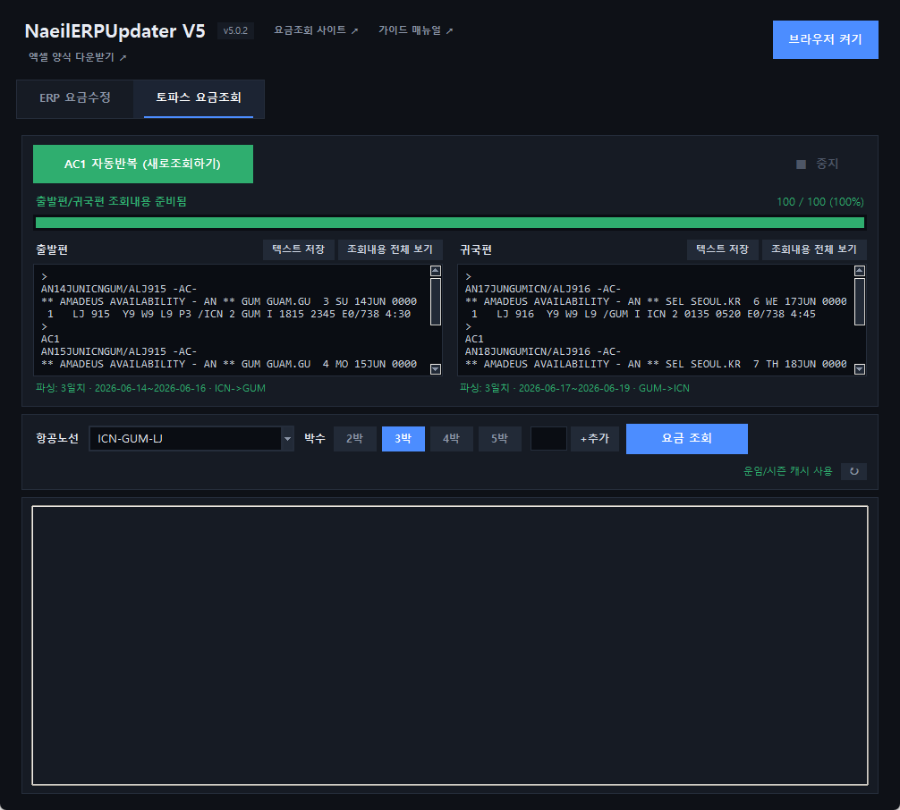
그림 6. 토파스 요금조회 탭 — 출발편·귀국편 원문이 들어오면 파싱 일자와 항공노선, 박수, 운임/시즌 상태를 한 화면에서 확인합니다.-
1토파스 요금조회 탭 선택:
화면 상단의 토파스 요금조회 탭을 선택합니다. 상단에는AC1 자동반복과 진행률, 가운데에는 출발편·귀국편 조회내용 칸, 아래에는 항공노선·박수·요금 결과 영역이 표시됩니다. -
2브라우저 켜기:
브라우저 켜기버튼을 눌러 TOPAS 로그인 화면을 열고, 사용자가 직접 로그인합니다. 이미 디버깅 크롬이 열려 있다면 그 창을 그대로 사용해도 됩니다. -
3출발편 첫 날짜 조회:
TOPAS Entry 화면에서 출발편 첫 조회 명령을 직접 입력하고 결과가 화면에 표시될 때까지 기다립니다. 첫 조회는 프로그램이 대신 만들지 않습니다. 사용자가 실제로 조회하려는 노선/편명/날짜가 정확히 찍힌 상태에서 시작해야 이후AC1결과가 올바르게 이어집니다.
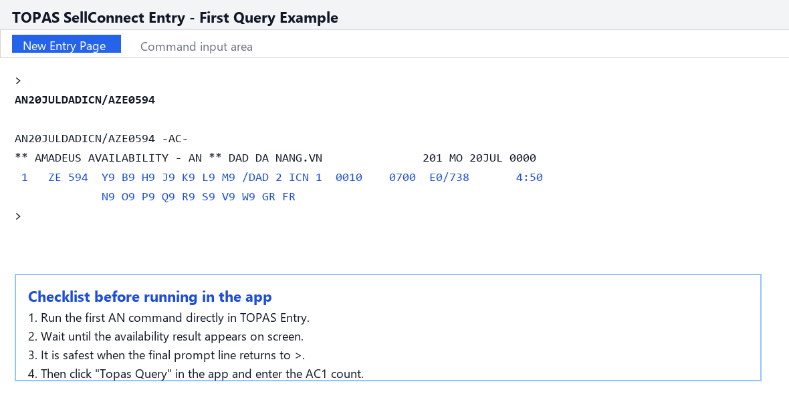
그림 7. TOPAS Entry 첫 조회 예시 — 조회 결과가 화면에 표시되고 마지막 프롬프트가>로 돌아온 상태에서 프로그램을 실행하는 것이 가장 안정적입니다.
-
4출발편 AC1 자동반복:
프로그램의AC1 자동반복버튼을 누르면 조회 횟수 입력창이 뜹니다. 여기에 실행할AC1횟수를 숫자로 입력합니다. 예를 들어200을 입력하면 첫 조회 다음 날짜부터 200번의 다음날 조회를 실행하고, 완료된 원문을 출발편 칸에 보관합니다.
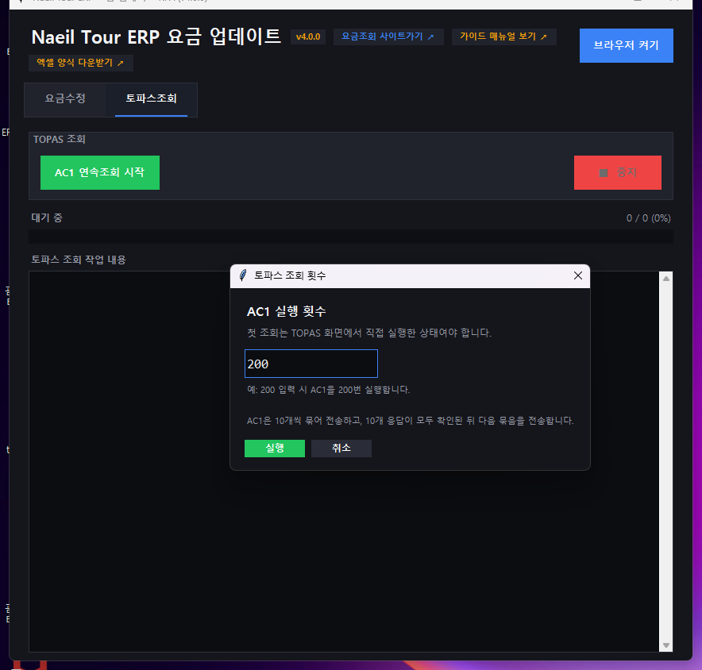
그림 8. AC1 실행 횟수 입력 — 숫자만 입력합니다. 200은 예시일 뿐이며 필요한 날짜 수만큼 입력하면 됩니다.-
5귀국편 조회내용 수집:
TOPAS 화면에서 귀국편 첫 날짜를 직접 조회한 뒤 다시AC1 자동반복을 실행합니다. 출발편 조회 횟수가 있으면 귀국편 입력창에는 출발편 횟수의 110%가 기본값으로 제안됩니다. 완료되면 귀국편 칸에 원문이 보관됩니다. -
6운임/시즌 상태 확인:
요금 계산 전 우측의 운임/시즌 상태가준비됨또는캐시 사용인지 확인합니다. 로드 실패가 표시되면↻버튼으로 다시 불러오고, 호출 한도 안내가 나오면 캐시 또는 다음 사용 가능 시점까지 기다립니다. -
7항공노선·박수 선택 후 요금 조회:
프로그램이 TOPAS 원문에서 항공노선을 자동 추론하지만, 필요하면항공노선칸에 직접 입력해 후보를 좁힐 수 있습니다. 박수는 2박·3박·4박·5박 또는 직접 입력 후+추가로 선택하고,요금 조회를 눌러 왕복요금을 계산합니다.
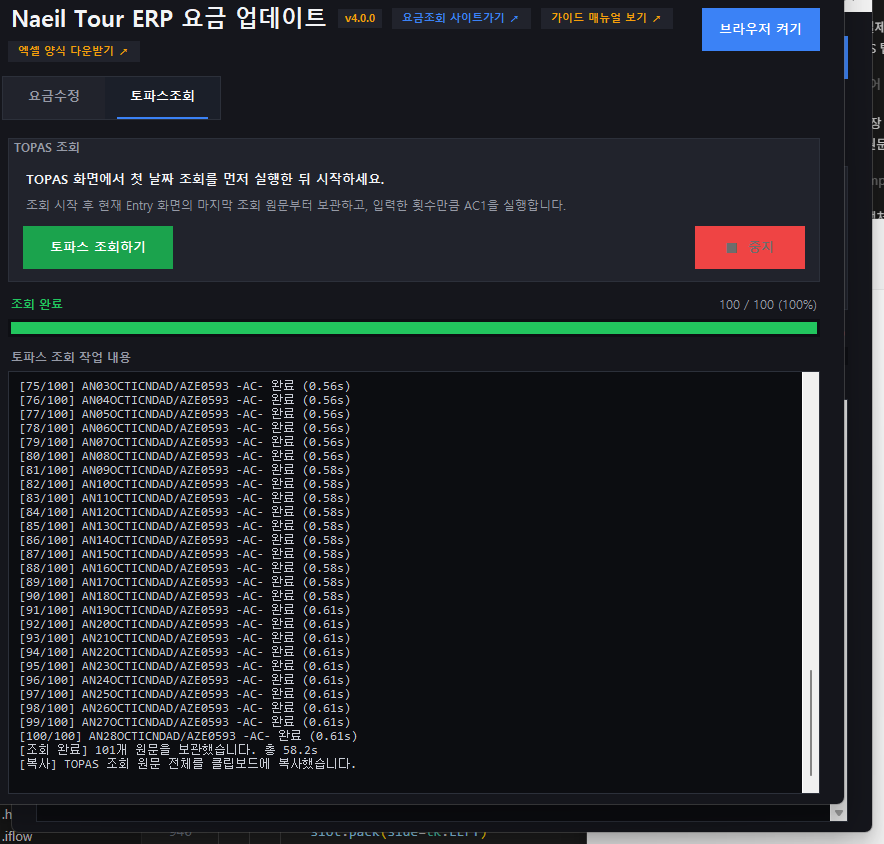
그림 9. TOPAS 조회 진행 화면 — 요청한 횟수와 완료된 횟수를 확인하고, 필요하면중지로 현재 수집을 멈춥니다.
조회내용 전체 보기와 텍스트 저장으로 원문을 확인하거나 파일로 보관할 수 있습니다.
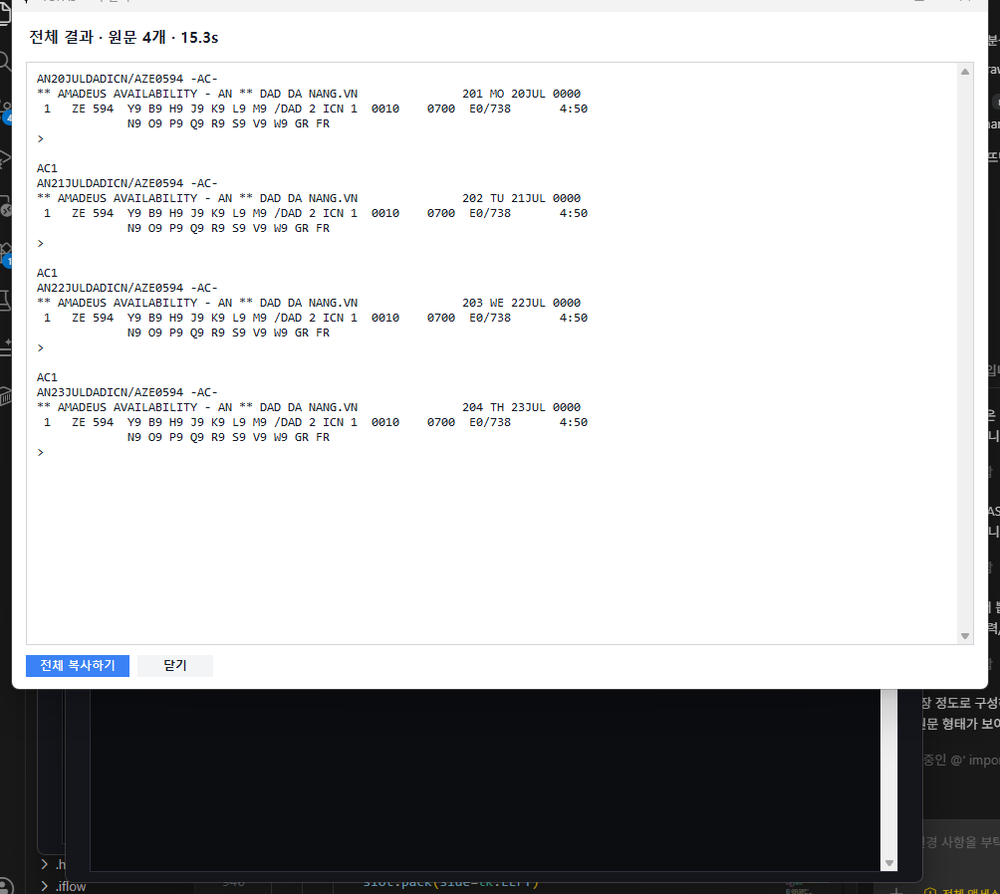
그림 10. TOPAS 조회내용 팝업 — 수집한 원문을 그대로 확인하고전체 복사하기로 한 번에 복사합니다.
-
8계산 결과 확인 및 ERP 입력표 전달:
결과 탭에는 출발일, 왕복요금, 상태가 표시됩니다.계산 과정 보기로 조합 근거를 확인하고,엑셀 다운로드로 저장하거나복사로 TSV를 클립보드에 담을 수 있습니다.요금수정 보내기를 누르면 마감이 아닌 행만 ERP 요금 입력표로 전달되며, 마감으로 제외된 행은 별도 팝업에서 출발일·귀국일·박수 목록을 확인하고 복사할 수 있습니다.
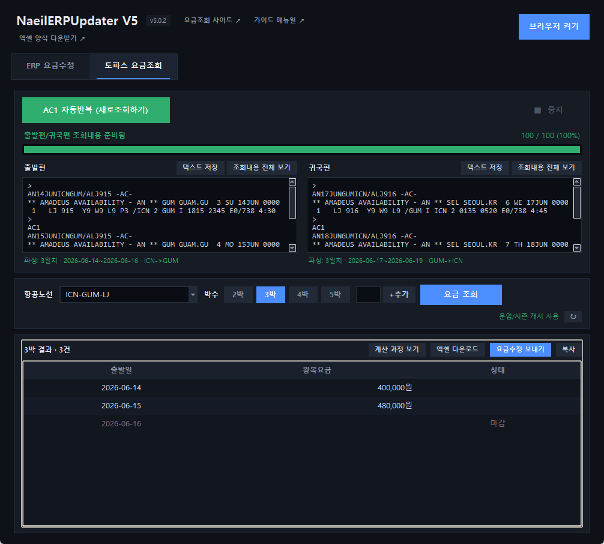
그림 11. 요금 조회 결과 — 출발일별 왕복요금과 마감 상태를 확인하고,계산 과정 보기, 엑셀 다운로드, 요금수정 보내기, 복사를 실행합니다.
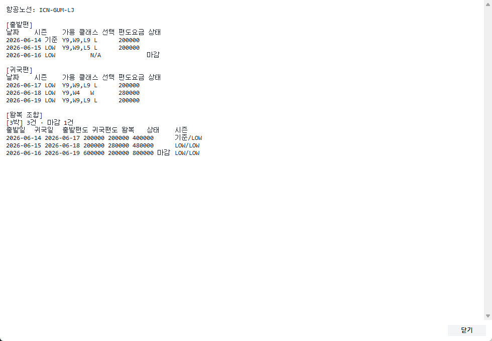
그림 12. 계산 과정 팝업 — 출발편·귀국편별 선택 클래스, 편도요금, 시즌, 박수별 왕복 조합을 확인할 수 있습니다.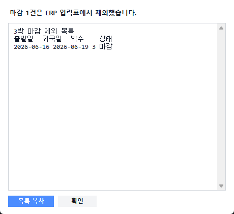
그림 13. 마감 제외 팝업 — ERP 입력표로 보내지 않은 마감 행의 출발일, 귀국일, 박수를 확인하고 복사합니다.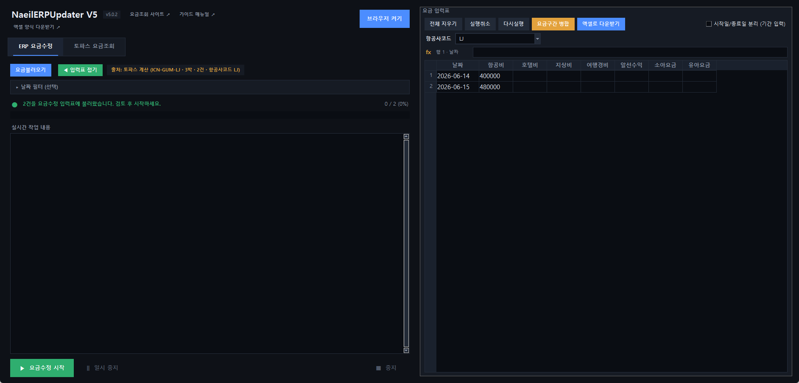
그림 14. 요금수정 입력표 전달 — 마감이 아닌 행만 항공비 칸에 들어가며, 출처 배지와 항공사코드가 함께 표시됩니다.2. 첫 조회 결과가 아직 로딩 중이면 프로그램이 현재 결과를 찾지 못할 수 있습니다. 마지막 프롬프트가
>로 돌아온 뒤 다시 실행하세요.3.
운임/시즌 미로드 상태에서는 요금 계산을 할 수 없습니다. ↻로 다시 불러오거나 캐시 사용 가능 여부를 확인하세요.4. 80초 안에 한 묶음의 10개 응답이 모두 나오지 않으면 오류로 멈춥니다. 이 경우 TOPAS 화면 상태를 확인한 뒤 같은 첫 조회 기준으로 다시 실행하면 됩니다.
FAQ / 트러블슈팅
프로그램을 사용하면서 발생할 수 있는 주요 예외 메시지와 처리 방안입니다.
프로그램이 이미 켜져 있거나, 일반 크롬 창이 열려 있을 때 생깁니다. 열려 있는 크롬 창을 모두 닫은 뒤 프로그램의 브라우저 켜기 버튼으로 다시 시작해 주세요. 그래도 안 되면 작업 관리자(Ctrl + Shift + Esc)에서 크롬을 모두 종료한 다음 다시 시도해 보세요.
엑셀 요금 칸이 비어 있거나, 숫자가 아닌 글자(예: "요금미정")나 음수가 들어 있을 때 나옵니다. 그 칸은 0원으로 처리해 작업이 멈추지 않고 계속 진행됩니다. 의도한 금액이 있다면 엑셀의 빈 칸이나 잘못된 값을 정리한 뒤 다시 불러와 주세요.
아주 예전 버전을 쓰고 계신 경우 자동 업데이트가 동작하지 않을 수 있습니다. 이럴 때는 최신 설치파일을 한 번만 새로 받아 설치해 주세요. 그다음부터는 새 버전이 나올 때마다 프로그램을 켤 때 자동으로 안내됩니다.
인터넷 연결 또는 운임 DB 호출 한도 문제일 수 있습니다. 먼저 ↻ 버튼으로 다시 불러오고, 계속 실패하면 캐시가 준비되어 있는지 확인한 뒤 잠시 후 재시도해 주세요. 로드가 완료되어 운임/시즌 준비됨 또는 운임/시즌 캐시 사용으로 바뀌어야 요금 계산을 실행할 수 있습니다.